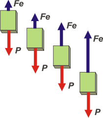

NO ME SALEN
PROBLEMAS RESUELTOS DE FÍSICA DEL CBC
(Leyes de conservación, energía mecánica)
|
|

|
| Adicional NMS 44.- Un bloque de 4 kg se libera desde el reposo sujeto a un resorte de 100 N/m, cuando éste se encuentra en su longitud natural. ¿Cuánto valdrá la máxima velocidad que alcanzará la masa? |
 |
|
Muy interesante y aleccionador ejercicio. (Ya hay otro parecido en esta colección, pero, por su poder de síntesis, este es mejor).
|
 |
La situación A te muestra al resorte colgado del techo tal como lo compramos en la ferretería. Ahí su estiramiento vale cero, no esta ni comprimido ni estirado (recordá que los nuestros son resortes ideales: sin masa ni peso). Arbitrariamente elegí la posición de su espira inferior como nivel cero de alturas. Podría haber elegido otro cualquiera, por ejemplo el piso. Preferí ése porque los estiramientos están definidos desde ese nivel y eso me desliga de la longitud del resorte, sobre el cual el problema nada dice. El único recaudo que hay que tomar cuando se define un sistema de alturas es que todo lo que esté debajo del nivel cero debe tener una altura negativa. |
|
|
|
La situación B te muestra el momento en que se suelta el cuerpo que está unido al resorte. Se suelta es un modo elegante de decirte que en ese instante la velocidad vale cero.
Y la situación C es el momento en que la velociad de cuerpo es máxima y cuyo valor queremos conocer, y que, además, el resorte está estirado una distancia d.
Los físicos pueden hallar esa velocidad máxima escribiendo la función de la velocidad y hallando su máximo con ayuda del análisis matemático, en este caso, con la derivada. Pero eso no está a nuestro alcance de modo que lo vamos a hacer de otra manera, que tiene la ventaja de que nos permitirá afianzar algunos conceptos físicos de gran importancia. Pero para eso tenemos que comprender cabalmente lo que ocurre.
Mientras el cuerpo desciende está sometido a dos fuerzas: el peso del cuerpo, P, que es constante, y la fuerza elástica, Fe, que es variable, va aumentando constantemente a medida que el cuerpo baja (que el resorte se estira), y además apunta hacia arriba durante todo el recorrido. |
|
|
|  |
Para reforzar esta idea te hice este esquemita: a medida que el cuerpo va bajando la fuerza elástica va aumentando. El primer DCL, a la izquierda, es apenas se soltó el cuerpo, luego el cuerpo sigue bajando.
Ahora fijate, si la fuerza peso es mayor (en módulo) que la fuerza elástica, la aceleración del cuerpo apuntará hacia abajo, o sea, aumentará la velocidad con la que baja.
En cambio, cuando la fuerza elástica sea mayor (en módulo) que el peso, la aceleración apuntará hacia arriba, o sea, disminuirá la velocidad con la que baja (se irá frenando).
La conclusión de este razonamiento es ésta: hasta que la fuerza elástica sea igual al peso el cuerpo habrá ido aumentando la velocidad. A partir de ahí comenzará a disminuirla. |
|
|
|
Fijate que no importa para nada que la aceleración sea constante o no (de hecho, no lo es). Lo que importa es que la aceleración apunte en el mismo sentido que la velocidad o no.
Si mientras la aceleración apunta hacia abajo la velocidad aumenta... la velocidad máxima la obtendrá cuando la aceleración cambia de sentido, o sea, cuando la fuerza elástica es igual a la fuerza peso.
Ahora sí, vamos a un DCL como Newton manda: |
|
|
 |
Acordate que habíamos llamado C al punto en el que el cuerpo adquiere su velocidad máxima. Ahora hemos razonado que en C la aceleración vale cero (es ahí donde cambia de sentido) y por lo tanto la fuerza elástica en ese instante vale lo mismo que el peso:
FeC = P
o sea,
k . d = m . g
d = m . g / k
|
|
|
|
O sea, ya sabemos cuánto descendió el cuerpo hasta alcanzar su máxima velocidad. Y para hallar el valor de esa velocidad podemos comparar energéticamente ese punto con el inicial, B.
WFncBC = ΔEMBC
No hay ninguna fuerza no-conservativa actuando, de modo que el primer miembro vale cero y puedo escribir:
EMB = EMC
por definición de lo que es energía mecánica:
EcB + EPgB + EPeB = EcC + EPgC + EPeC
½ m vB² + m g hB+ ½ k ΔxB² = ½ m vC²+ m g hC+ ½ k ΔxC²
Hay varias cosas que valen cero. Por ejemplo ECB = 0 (ya que el enunciado dice: "se suelta", y eso significa vB = 0). También es cero la altura hB (por elección arbitraria), y también es nulo es estiramiento en B. La altura de C es -d, y el estiramiento en esa posición es exactamente igual a la altura. Lo que nos queda es ésto:
0 = ½ m vC² — m g d + ½ k d²
Reemplacemos d por la igualdad a la que llegamos con Newton:
0 = ½ m vC² — m² g² / k + ½ k ( m . g / k)²
0 = ½ m vC² — ½ m² g² / k
Dejame simplificar un poco más:
0 = vC² — m g² / k
Ahora me gustó. De ahí despejo vC y la calculo.
vC² = m g² / k
vC² = 4 kg (10 m/s²)² / 100 N/m
|
|
|
| |
vC = 2 m/s |
la velocidad máxima |
|
|
|
Tenés otro ejercicio parecido acá. |
|
 |
| DESAFIO: ¿Te animás a graficar la aceleración y la velocidad en función de la posición? |
|
| Estando el ascensor a disposición del público el propietario de este sitio no se hace responsable por los accidentes ocasionados por el uso de las escaleras. Y viceversa. Última actualización nov-14. Buenos Aires, Argentina. |
|
|
|